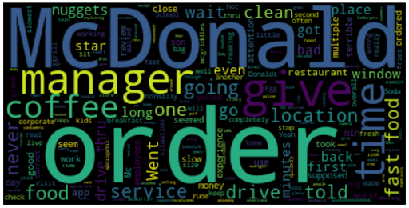
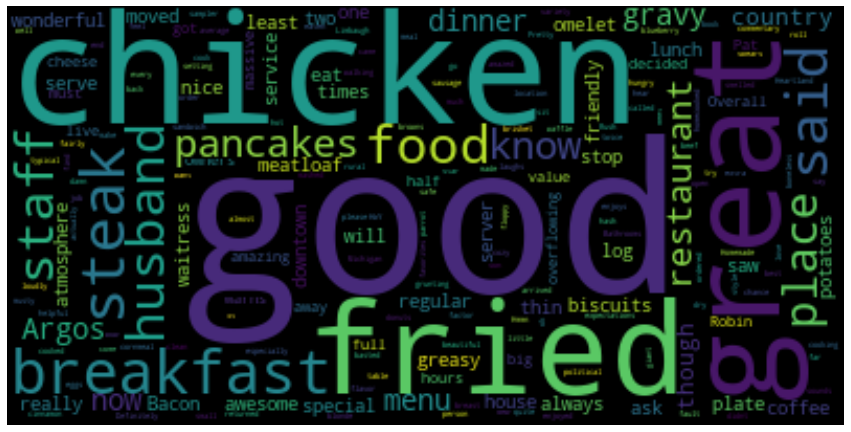
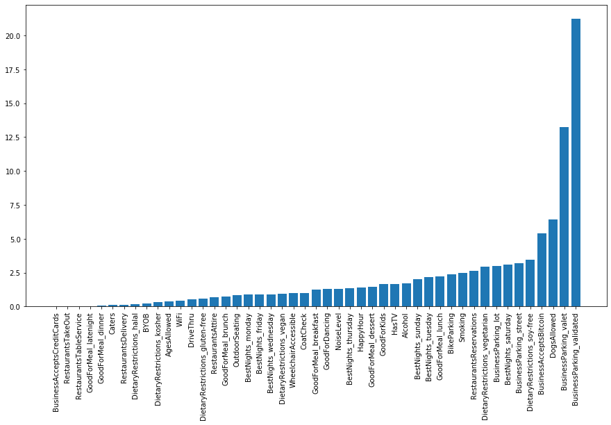

Competition Bar Graph
Which hotels have a tendency to be crowded on weekdays? What do people prefer on the weekends? These are the questions we wish to answer from the below competition bar graph.
As seen from the competition bar graph, the footfall in the ‘Yuva India Restaurant’ can be described as: Yuva India Restaurant has a very close proximity to the CMU campus. Hence, on the weekdays, the restaurant experiences a high amount of footfall. Compared to weekdays, the footfall on the weekends increases at a lesser pace. This can be attributed to the fact that over the weekends, many people have parties and hence, the footfall in dessert shops and pizza places increases at an extremely high pace.
Sentiment Analysis
Can we provide a personalized feedback to each restaurant based on sentiments of the reviews?

To answer this question, we have created an interactive sentiment analysis interface for each restaurant based on the reviews provided. We have measured 2 metrics for analysis, the Polarity and the Subjectivity of the reviews. Both the polarity and the subjectivity have been scaled to lie between 0 and 100. Further, using the provided interface, we can filter restaurants based on the name of the restaurant, state, and city. We can analyze and compare the average perception of restaurants. Hovering over a particular restaurant also shows its address in the tooltip.
Word Cloud
Can we observe some trends in the reviews based on different geographical locations? To answer this question, we have created word clouds.
To get a general sentiment regarding the restaurant and its reviews, we build a customizable word cloud for each state. This would save time by getting a general idea regarding the way users perceive the food in the restaurant, as compared to scrolling through tons of reviews. Statewise, we can get a general idea as to which state has the best reviews and which state can improve their average restaurant food quality.
Above Figure is a word cloud of the state of Arkansas. As can be observed from the cloud, most reviews feature McDonalds. Some other popular keywords in reviews of Arkansas restaurants is chicken nuggets, fast food etc.
The above word cloud is representative of the state of Indiana. It can be clearly seen that the popular keywords are ‘Chicken’, ‘pancakes’, ‘breakfast’.
Clustering using KMeans
Can we provide any feedback to the restaurants based on the data we have? Can we give them some insights through which they can increase their future ratings?
Star rating of the restaurant
Can we predict the star rating of the restaurant? What are the features that affect the rating the most?
From yelp_business_attributes.csv, we extracted 47 binary features relevant to the restaurants in our dataset. Using these features, we trained a Linear Regression model to predict the star rating of a restaurant. The learned weights enable us to find the importance of different features in making the prediction. This is done by taking the absolute value of the weight and converting it to a percentage value. Following bar plot shows the importance of different features in determining the star rating of a restaurant.